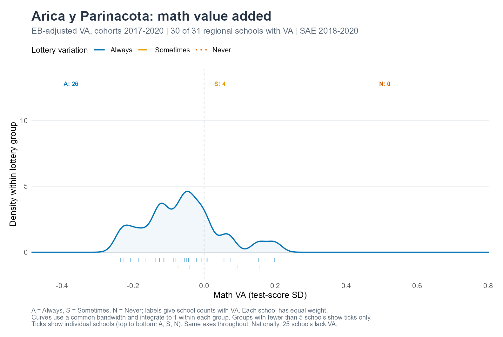
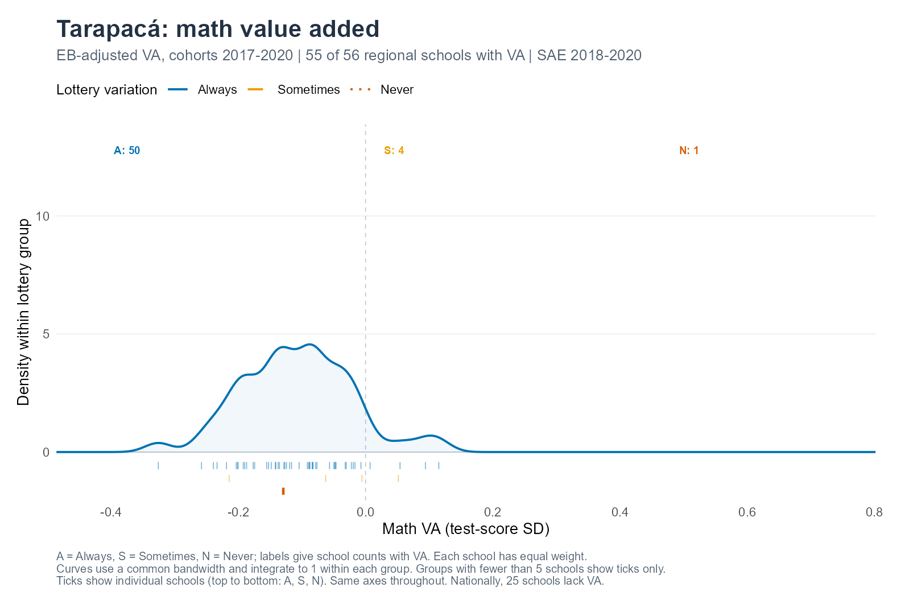
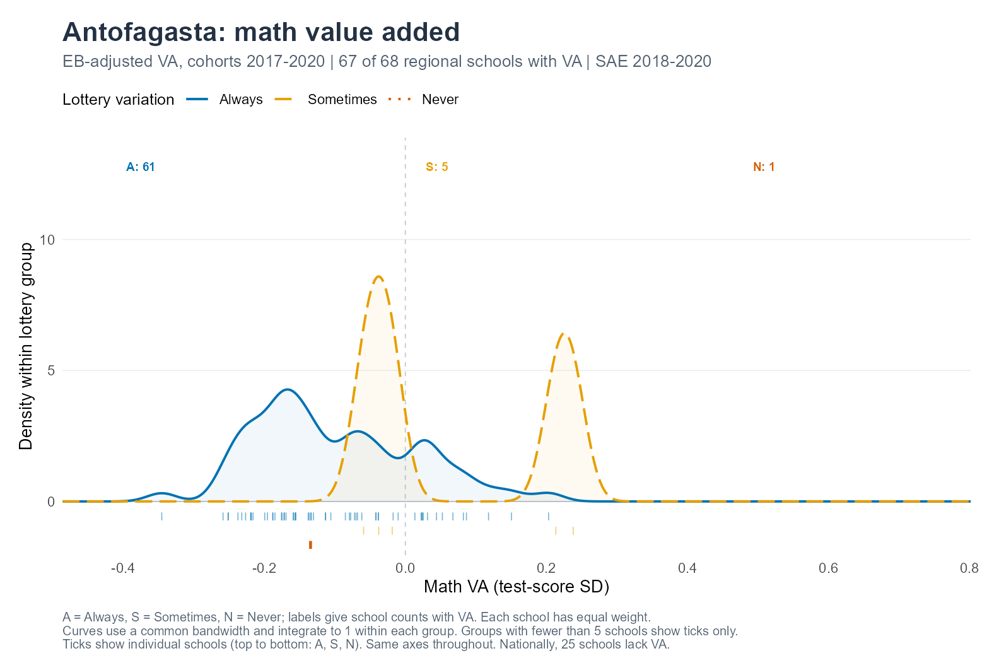
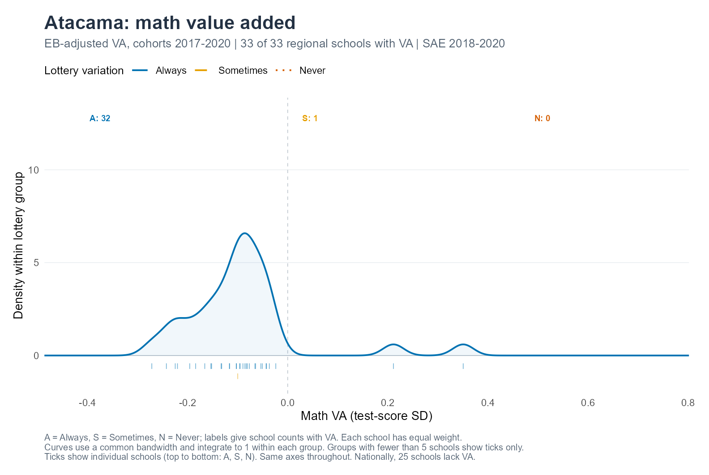
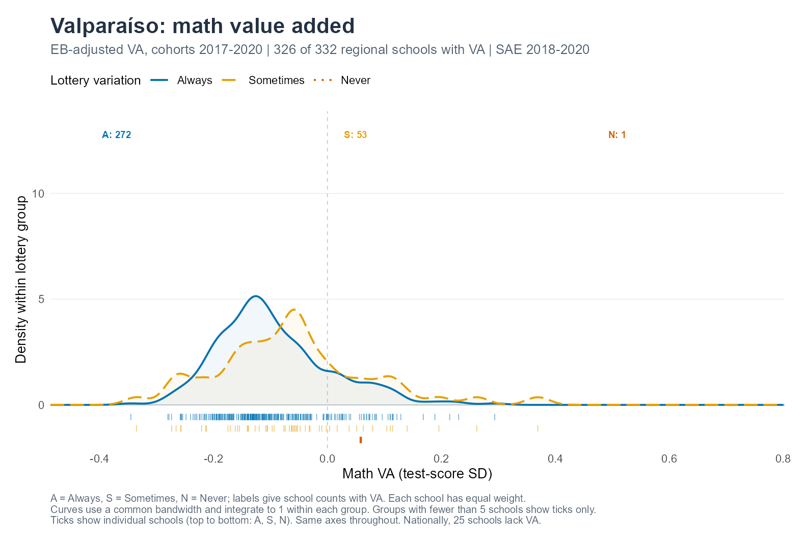
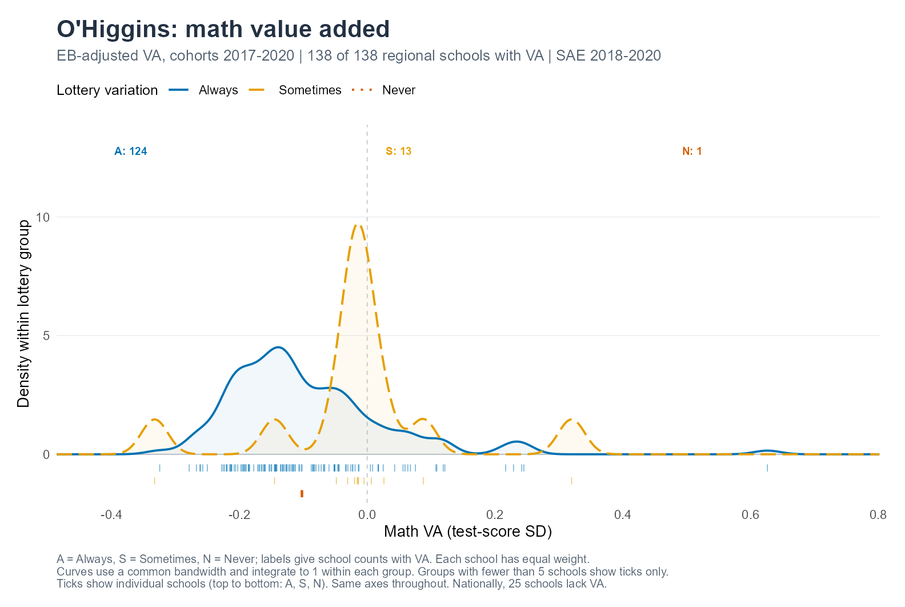
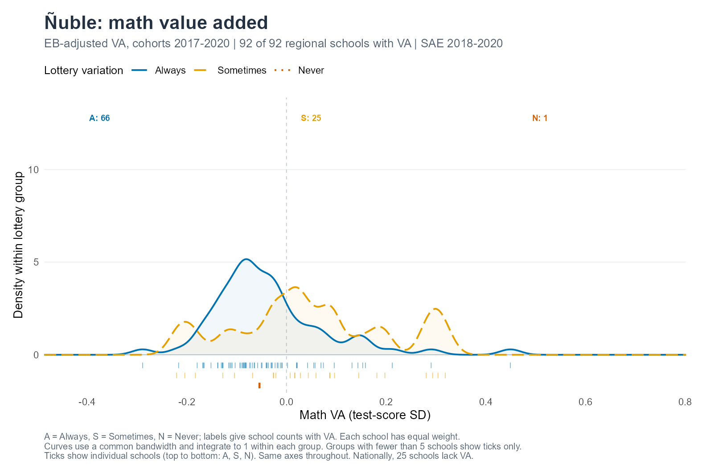
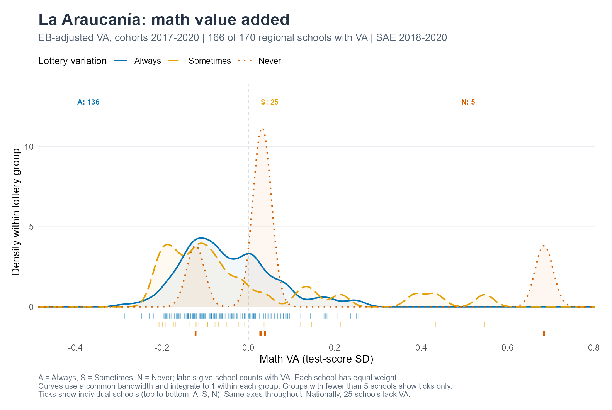
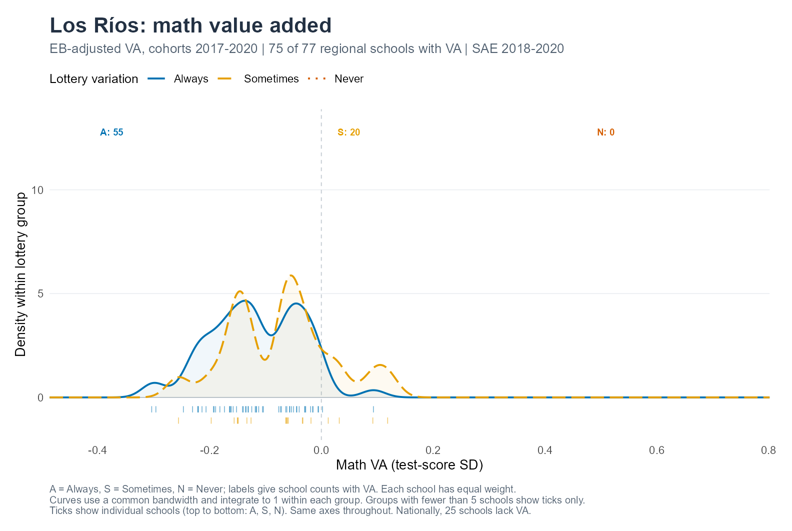
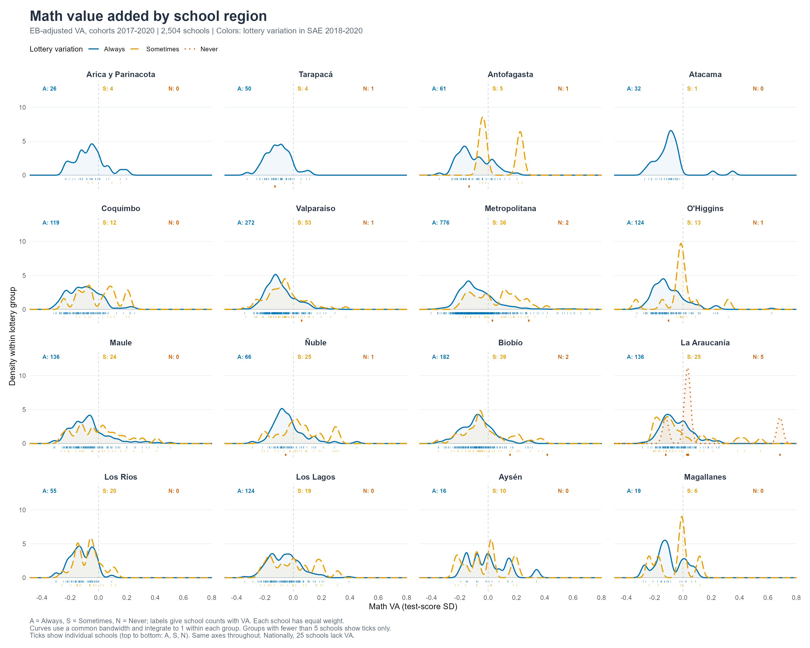

2504 of 2529 classified schools have an estimate. Blue: always; orange: sometimes; red: never.
School weights are equal. The VA measure is the paper's EB-adjusted 2017-2020 All-sample estimate, with its original student-centered normalization. VA is not re-estimated, re-centered within region, or conditioned on high math scores. Categories and school regions are unchanged from the preceding distribution.
Each density integrates to one within its region and lottery group. Colors therefore compare distribution shapes, not group shares. Every school appears as a tick; groups with fewer than five schools have ticks only. Absent groups are labeled zero. Common bandwidth and axis scales apply to every plot.
Always/sometimes/never is defined over observed grade-9-offering years in SAE 2018-2020. Metropolitana enters in 2019; the preceding report documents year coverage and the 37 schools observed only once. These are adjusted observational VA estimates, not separately estimated lottery effects.
High-resolution overview | Vector overview (SVG) | Coverage and counts
